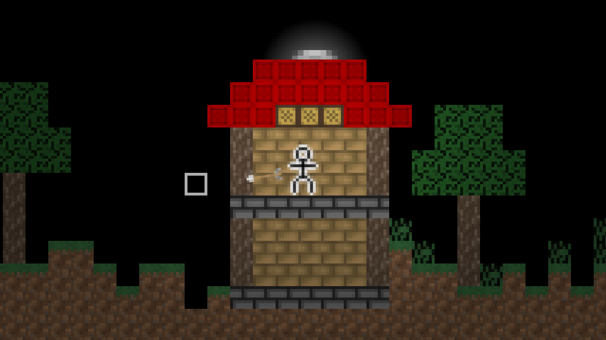
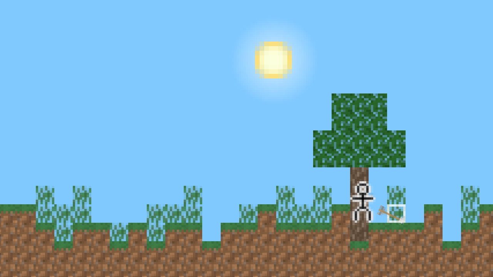
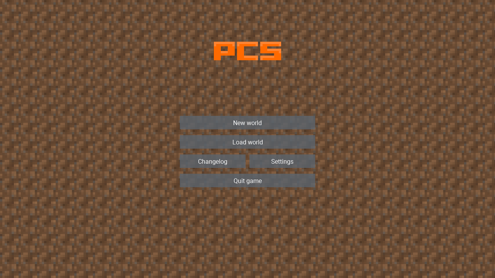

← Return to list

PCS
A 2D sandbox game made in Processing
Screenshots



Changelog
Version 21.07 (12/06/2021)
- New camera behavior
- Scrolled menu background
- Option for menu background
- Music for the main menu and gameplay
- Ability to change the framerate
- Respawn after death
Version 21.06 (5/16/2021)
- New blocks: planks and lantern
- Lighting effects at night
- Console opened by tilde
- Game scaling when resizing window
- Fullscreen mode
- Changelog and settings option in main menu
- New inventory look
Version 21.05 (4/14/2021)
- The world is now 1024 x 64 instead of 64 x 64
- Day-night cycle
- Smaller file size
Version 21.04 (2/27/2021)
- New blocks: wool (8 colors)
- Fixed a fatal bug that caused the world to shrink every time it was loaded
- Inventory opened by pressing E
Version 21.03 (20/02/2021)
- Ability to save and load worlds
- New default world generation
- New structure - tree
- New blocks: grass, leaves, wood
- Debug screen opened with C key
- Ability to move the camera with the arrow keys
Version 21.02 (2/13/2021)
- Generation of the world "indestructible box" and "flat"
- Blocks: grass, earth, pavement, bricks, indestructible bricks